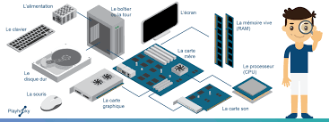

Les Composants Des Ordinateurs

L'ordinateur :
Un ordinateur est un système de traitement de l'information programmable tel que défini par Alan Turing et qui fonctionne par la lecture séquentielle d'un ensemble d'instructions, organisées en programmes, qui lui font exécuter des opérations logiques et arithmétiques. Sa structure physique actuelle fait que toutes les opérations reposent sur la logique binaire et sur des nombres formés à partir de chiffres binaires. Dès sa mise sous tension, un ordinateur exécute, l'une après l'autre, des instructions qui lui font lire, manipuler, puis réécrire un ensemble de données déterminées par une mémoire morte d'amorçage. Des tests et des sauts conditionnels permettent de passer à l'instruction suivante et donc d'agir différemment en fonction des données ou des nécessités du moment ou de l'environnement.